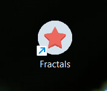

РУКОВОДСТВО ПОЛЬЗОВАТЕЛЯ
Сначала нужно запустить файл Fractal.exe:

Рисунок 1 – Иконка файла exe приложения Фракталы
После вызова приложения появится оригинальная заставка, изображённая на рисунке 2.
Рисунок 2 – Заставка приложения
После заставки появляется главное окно приложения, представленное ниже на рисунке 3.
Рисунок 3 – Главное окно приложения
На главной форме имеется элемент menuStrip, представленный двумя ToolStripMenuItem: Файл и Помощь (Рис. 4 - 5).

Рисунок 4 – Меню приложения, вкладка Помощь
Рисунок 5 – Меню приложения, вкладка Файл
По нажатию пункта меню Помощь > О программе открывается окно, содержащее информацию о программе. Форма представлена на рисунке 6.1

Рисунок 6.1 – Форма о программе
По нажатию пункта меню Помощь > Руководство пользователя открывается файл руководства пользователя.
Рисунок 6.1 – help-file Руководство пользователя
Также программа позволяет сделать копию изображения фрактала, сохранить ее и открыть в приложении Paint, для удобной редакции изображения (рис. 7 - 8):
Рисунок 7 – Открытие диалогового окна для выбора места сохранения и наименования файла.
Рисунок 8 – Открытие файла в приложении Paint.
Далее есть возможность создать соответствующую запись о параметрах фрактала и изображении фрактала в таблице Excel, выбрав пункт создания нового файла данного приложения, после чего появляется диалоговое окно, сообщение об успешном создании файла и открывается приложение Excel, как показано на рис. 9 - 11.
Рисунок 9 – Открытие диалогового окна для выбора месторасположения файла и его названия.
Рисунок 10 – Сообщение об успешном создании файла.

Рисунок 11 – Открытие файла в приложении Excel.
Если же пользователь хочет добавить запись в уже существующий файл, он выбирает пункт меню “Добавить в уже существующий”, в открывшемся диалоговом окне выбирает файл, после чего он открывается с уже добавленной записью, как продемонстрировано на рисунке 12:
Рисунок 12 – Открытие файла в приложении Excel.
Как можно заметить из рисунка выше, если перейти по гиперссылке в графе “Name of the image”, открывается изображение фрактала, которое мы создали перед этим.
Также на главной форме имеются поля textBox для ввода масштаба, координат, глубины, угла, размера, разветвления, checkBox для вызова дополнительной формы, radioButton для выбора метода фрактала, кнопки для выбора цвета фона и пера, кнопки для создания фрактала и очистки экрана, элемент glControl для изображения фрактала. Форма представлена на рисунках 13.1 - 13.5 ниже.
Рисунок 13.1 – Главное окно приложения, изменения после выбора метода фрактала.
Рисунок 13.2 – Главное окно приложения, выбран для изображения фрактал Коха.
Рисунок 13.3 – Окно выбора цвета.
Рисунок 13.4 – Результат изображения с измененными цветами, цвета фона и пера соответсвуют цветам кнопок.
Рисунок 13.5 – Главное окно приложения, выбран для изображения фрактал Коха, изменены масштаб и цвет.
Для более подробных данных нужно отметить checkBox “Дополнительная информация” и заново нажать кнопку “Create”. После этого открывается форма с двумя вкладками, на первой есть возможность задавать масштаб и кнопка Анимации, что показано на рисунке 14:
Рисунок 14 – Форма с анимацией.
На второй вкладке есть таблица и две кнопки для импорта ее в документ Word и Excel, что продемонстрировано на рис. 15.
Рисунок 15 – Форма с таблицей.
Экспорт данных происходит по аналогии такого же процесса описанного выше. По итогу создаются докумены, представленные на рисунках 16.1 и 16.2:
Рисунок 16.1 – Пример документа в Excel.

Рисунок 16.2 – Пример документа в Word .